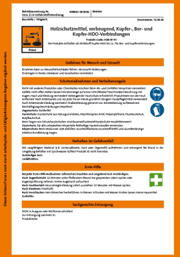

Vor Beginn der Arbeiten müssen die Gefährdung am Arbeitsplatz durch Einatmen und Hautkontakt sowie durch physikalischchemische Gefährdungen beim Einsatz des Produktes bestimmt, die geeigneten Schutzmaßnahmen festgelegt und in der Gefährdungsbeurteilung dokumentiert werden.
Beschäftigte, die mit Holzschutzmitteln umgehen, sind jährlich mindestens einmal – Jugendliche mindestens halbjährlich – über die Gefahren und Schutzmaßnahmen zu unterweisen.
Hierzu müssen Betriebsanweisungen erstellt werden. Die regelmäßige Unterweisung ist durch Unterschrift zu bestätigen. Ein Exemplar der Betriebsanweisung ist an den Arbeitsplätzen auszuhängen.
Entwürfe von Betriebsanweisungen für verschiedene Holzschutzmittel sind im Internet abrufbar unter www.holz-bg.de/pages/service/download.htm und unter www.wingis-online.de